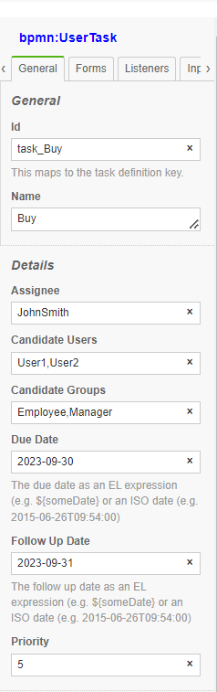

Security#
In general Application Security deals with the following topics:
User Identification and Authentication#
BPMNServer does not provide user identification and authentication component, but relies on the calling application to authenticate the user. The companion package BPMN-web provides full authentication and identification as a mere demo.
Web App example/ Server Side Scripts#
const user1 =new SecureUser({ userName: 'user1', userGroups: ['Owner', 'Others']});
await api.engine.start(modelName,data,{},user1,options);
WebAPI/REST#
Since WebAPP is already authenticated by **APIKey** is trusted to pass user object
// get api-key from header
// url/engine/start
await api.engine.start(processName,data,user,options);
Using BPMNClient as a service#
const client= new BPMNClient(url,apiKey);
// userId is passed here bypassing authentication, assuming user is already authenticated
// await server.engine.start(processName,data,startNode,userId,options);
let response = await server.engine.start('Buy Used Car', { caseId: 1050 },null,'user1');
//await server.engine.invoke(query, data, userId);
response = await server.engine.invoke({id: response.id , "items.elementId": 'task_Buy' },{},'user1');
Access Control Rules#
bpmn along with Camunda Extensions, provide adequate means of defining access Rules:
Task Assignment#
The following properties can be defined for each User Task
| Property | Description |
|---|---|
| assignee | defines the userName to perform the task |
| candidateUser | defines potential users that can perform the task |
| candidateGroups | defines potential userGroups whose members can perform the task |
| dueDate | Date the task is due |
| followUpDAte | Date to followup |
| priority | Task periority |
Values provided in the model editor, can be static string or an Model Expressions
Process Initiator#
You can define the variable name for the instance initiator

This will assign the userId of that started the process
console.log(data.starterUserId)
Pool as a role#
BPMNServer allows you to define pools and using the pool name as userGroup
BPMN Editor#

At the start of the userTask the designer values are evaluated into the instance item.
These fields can accept the following:
-
A string value
-
JavaScript expression
$(this.data.requester) -
JavaScript Async function call
$(return services.getSupervisorUser(this.data.requester))
For example: variable data.dueDate is copied into item.dueDate
Manual Assignment#
An application can prove a UI to allow users to assign tasks to others, this can be done throught the 'assign' method:
const assignment = {assignee: 'user3', candidateUsers: ['user4','user5'],dueDate: new Date()};
const newData={var1:650};
response = await server.engine.assign({id: response.id , "items.elementId": 'task_Buy' },newData,userId,assignment);
Access Control Enforcement#
Security Rules:#
To enable security Rules, you have to edit `.env'
ENFORCE_SECURITY=true
Security Rules are by-passed if#
-a. User is and Admin or System
-b. .env REQUIRE_AUTHENTICATION === 'false' || process.env.ENFORCE_SECURITY
User can View/Assign Item if:#
-1. Item has no restrictions if (Assignee==null and CandidateUsers == null and CandidateGroups==null)
-2. User has a group indicated in item.CandidateGroups
User can Execute Item if:#
-1. User is the Assignee
Scenarios:#
-1. User is Assignee
-- Can Invoke/Complete Task
-- Can Assign to another User
-2. User is not Assignee but Can View (see rules above)
-- Can Assign Task to either another user or self (Take Task)
-- Then User can Invoke Task
Searching for Assignment Data#
api.data provides a method api.data.getPendingUserTasks that User Task that a User has access to.
Alternativly, to search for specific items for a particular user or group:
var res = await server.dataStore.findItems(
{
"items.status": "wait", "items.elementId": "task_Buy",
"$or": [
{"items.candidateUsers":"user5"},
{"items.candidateGroups":"group1"},
{"items.candidateGroups":"group2"},
]
}
);
The above will return all items Buy Tasks in wait state assigned to 'user5' or 'group1' or 'group2'
If you have selected to enforce Security Rules, the above will by automatically done for you.
-- check following if covered here
Demo Application Authentication and Security#
Default installation, disables User Authentication and Security Rules
To enable them, edit the .env file
# -- Security Setting
# if true, would direct users to login page, requires registration
# valid values: true flase
# set to false if you just want to run in DEV environment
REQUIRE_AUTHENTICATION=false
ENFORCE_SECURITY=false
To:
REQUIRE_AUTHENTICATION=true
ENFORCE_SECURITY=true
This will utilize passportjs for security
Handling Access Control#
Here is a typical flow of a Process:
- User1 will
StartProcessRequest Vacation - System will store the initiator as
item.data.requester='User1' - Since Task Request has
assignee=item.data.requesteronlyUser1can invoke this task - Once Task Request is completed by User1 , Task Approve will be created.
Task ApproveNeed to be assigned to the requester supervisor A Javascript event trigger on `start' will determine the supervisor userName and assign it the task
item.assignee=appServices.getSupervisor(item.data.requester);
Assuming appServices class contain such an async method that my call MongoDB
Alternatively; in the model editor
`assignee` field `$(appServices.getSupervisor(this.data.requester))`
- To
Notifythe supervisor user, a JS trigger will invokenotifyfunction
Filtering data for Security:#
let pending = await bpmnAPI.data.findItems({ "items.status": 'wait', "items.type": 'bpmn:UserTask' }, user);
or
let pending = await bpmnAPI.data.getPendingTasks({}, user);
will return all pending tasks that the user is AUTHORIZED TO SEE To See only Tasks Assigned to User
let pending = await bpmnAPI.data.getPendingTasks({'items.assignee':user.userName},user);
or you can use filter for the items to check item.assignee